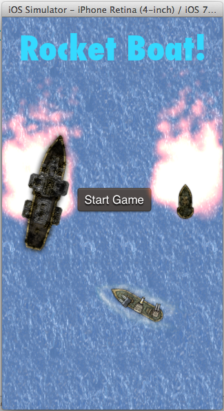

Welcome!
Hi, I'm Ricardo Rubio, a web & mobile developer in the San Fracisco Bay area.
I'm currently available for hire. Below, you'll find some projects I have worked on.
I'm versed in multiple technologies including:
- Ruby
- JavaScript
- Objective-C
- Rails
- JQuery
- HTML/CSS
- SQL
- Cryptocurrency
Feel free to contact me via LinkedIn or Twitter if you'd like to chat!
I built this site as well and you can view the source here
View source code
NoodleSkoodle helps people discover and track high quality free open online courses from top universitiesand educational platforms with a catalog of over 1400+ courses.
This was my final team project at Dev Bootcamp.
I worked as the team lead. I set team goals, held daily standups, and managed workloads. Everyone contributed to coding the site.
Within a week of the idea for this site, we delivered a working product, turning idea into reality in a short timespan.
Rocket Boat! is a game for iOS devices built using Objective-C, Cocos2D and SpriteBuilder.
It's a top down scroller where you command a boat.
The goal is to dodge the rockets and survive as long as you can, scoring points.
I built this by myself for the MakeGamesWithUs Game Development Hackathon, hosted by Apportable April 19th 2014 - April 20th 2014 in San Francisco, CA.
I ended up being only 1 of 2 winners, winning the "best rookie" award, a chromecast, and -$1000 tuition off MakeGamesWithUs Academy
Development continues on this project, until I have it fully finished and approved in the Apple App Store.

View source code
I'm a Dogecoin and Bitcoin aficionado, so one of my first forays into using RESTful web APIs was to build something that would be useful to me.
CryptSeer makes it easy to see the current price of DOGE (an alternative virtual currency) in terms of dollars and bitcoins.
It integrates Coinbase and Cryptsy APIs to provide the most up-to-date pricing data for the user.
Uses Sinatra, MVC architecture, API calls, PostgreSQL, HTML/CSS, and ActiveRecord.